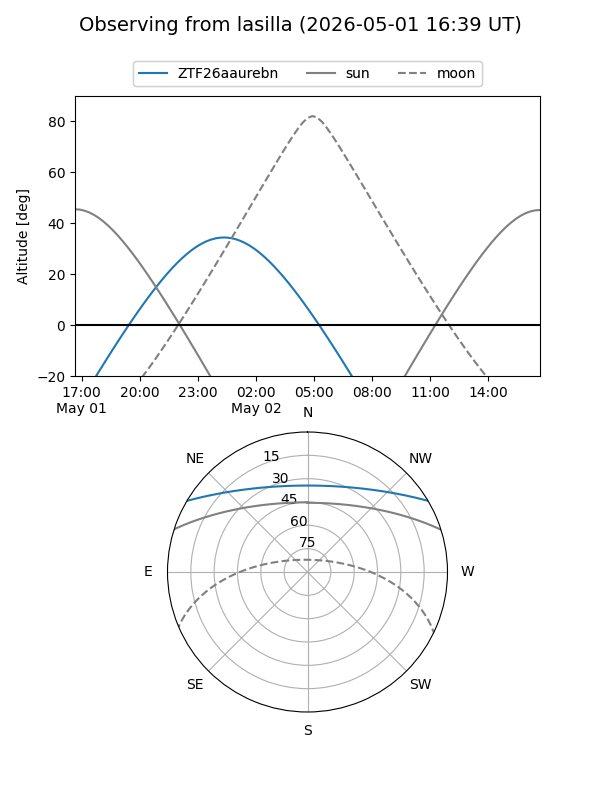
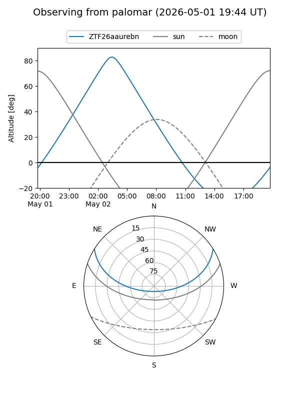

ZTF26aaurebn
Target ZTF26aaurebn at 2026-05-02 04:27
Aliases and brokers:
FINK: link
Lasair: link
ALeRCE: link
alt names
ZTF26aaurebn (ztf,fink_ztf)
Coordinates:
equatorial (ra, dec) = 154.1169,+26.45010
equatorial (HMS+DMS) = 10:16:28.06,+26:27:00.37
galactic (l, b) = (205.0074,+55.54804)
Flags:
Photometry:
last ztfg=19.16
1 ztfg detections
Lightcurve
Visibility


Additional plots